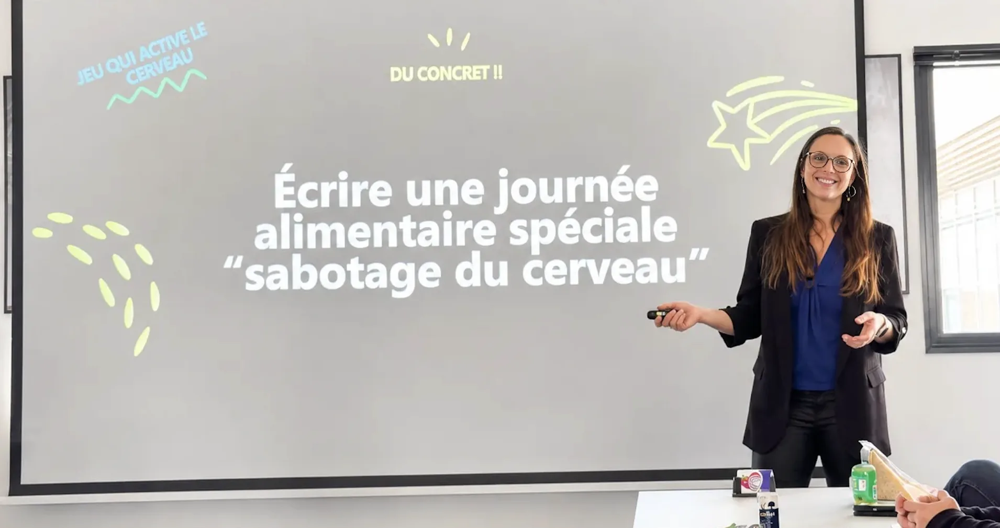

Atelier
Un format interactif et participatif : on expérimente, on échange, on repart avec des outils concrets.
En entreprise · Sur site ou en visio
Vous souhaitez instaurer cette culture dans votre entreprise, pour des équipes plus énergiques, plus sereines et plus performantes ?
Des interventions originales et impactantes sur des sujets bien-être, alliant diététique et hypnose
Une approche centrée sur la diététique, complétée par des outils d'hypnose pour explorer les mécanismes du changement.
Un contenu qui donne envie d'agir, avec des conseils réalistes, accessibles et adaptés à la vraie vie.
Un impact durable sur l'énergie, la santé et le bien-être de vos collaborateurs
Les bénéfices
L'enjeu
Ces difficultés impactent directement vos collaborateurs — et votre performance. Mieux manger et mieux gérer ses émotions, c'est l'investissement le plus efficace que vous puissiez faire pour vos équipes.
Sur site ou en visio
Un format interactif et participatif : on expérimente, on échange, on repart avec des outils concrets.
Un moment inspirant pour sensibiliser un large public et donner envie de changer, en douceur.
Un suivi individuel, sur site, pour un accompagnement personnalisé de vos collaborateurs.
Ils ont franchi le pas

Idées de sujet
Quelques thèmes possibles — et bien plus encore. Chaque intervention est 100 % personnalisable selon vos besoins.
Le devis est établi après un premier entretien en visio, gratuit et sans engagement, pour cerner vos besoins et construire l'intervention qui vous ressemble.